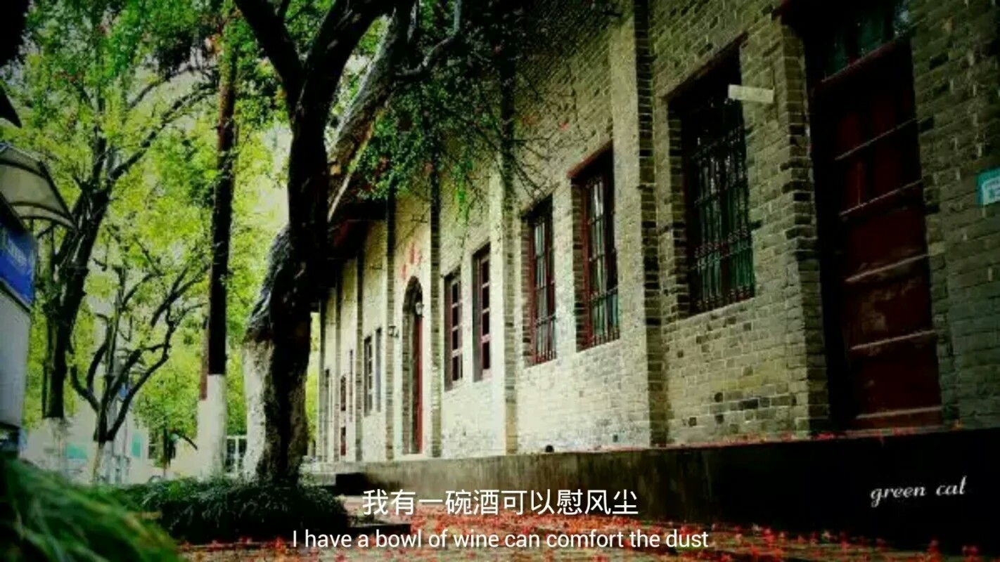
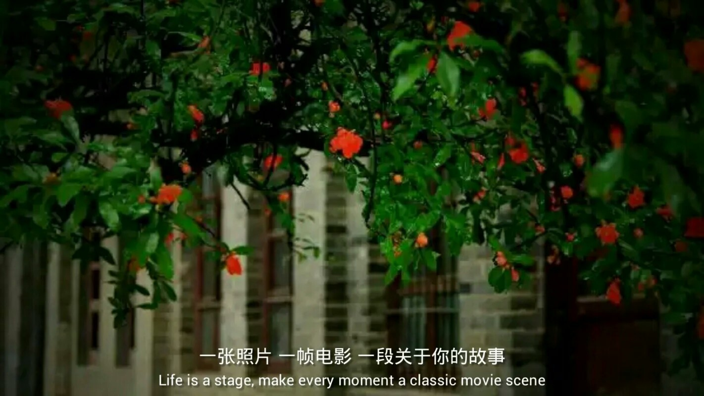

只要你还有一个好故事，还可以找个人讲讲

高中的一个傍晚，语文老师在给我们讲解模拟试卷。教室里昏暗低沉，大家都是无精打采，双手撑住下巴，勉强打起精神在听课。很突然的，一声惊雷，雨滴淅沥沥的落下来，教室外的树叶开始乱哄哄的摇晃，地上的花草也乐得浑身抖动。语文老师合上试卷，走到窗边，轻轻打开了一扇窗，清风扑面而来，教室里顿时清爽无比，瞌睡全都不翼而飞，叽叽喳喳的讨论声四起。语文老师说到：“今天我们不讲课了，我们来听雨。”大家都欢声叫好。语文老师继续说：“大家先安静下来，全心全意听一段雨声，看看能联想到哪些学过的关于”雨“的诗句，等会我来提问大家。”教室安静下来，大家于是聚精会神去抓听雨滴碰撞泥土，树叶的声音。以前背诵的关于雨的诗句，竟然自己一句一句往脑海里钻，似乎不用刻意想，也能说它个十句八句。等到老师开始提问，大家争先恐后举手回答，教室里顿时炸开了锅。有人说：“天街小雨润如酥，草色遥看近却无。“有人说：“水光潋艳晴方好，山色空蒙雨亦奇。”有人说：“落花人独立，微雨燕双飞。“也有人说：“细雨湿衣看不见，闲花落地听无声。”还有人说：“对潇潇暮雨洒江天,一番洗清秋.”………大家兴致勃勃，丝毫没有停下来的意思。直到下课铃声骤响，才将我们从雨意里拉回到现实中。老师清了清嗓子，问道：“大家从出生到现在，见过无数次雨，为什么偏偏今天的雨能带给你们这么大的快乐呢？ “大家东观西望，不解其意。老师继续说：“平时很多人跟老师抱怨学古文，学诗句，学散文很难，并且毫无用处。 可今天，却由你们自己找到了诗句的意义----我们于日用必需的东西以外，必须还有一点无用的游戏与享乐，生活才觉得有意思。我们看夕阳，看秋河，看花，听雨，闻香，喝不求解渴的酒，吃不求饱的点心，都是生活上必要的----虽然是无用的装点，而且是愈精炼愈好。”说完，老师像平时每一次那样，拿起课本走出了教室。我却在那一刻， 被一种强大又朦胧的情愫打动，几分豁然开朗的通透，几分快刀回鞘的畅然。
这雨来的很巧
不错，有时候风、尘、雷或电都来得巧极了。
那是毕业前昔，一场想忘都忘不掉的惊风雷电。
当闪电铁树银花般划破墨兰的夜空，群风从仅有的两扇窗户灌入的时候，我的心在咆哮。那天人很少，自由自习大家都选择了居家学习，但是整个三层每间教室的灯都亮着，似乎这是高三乃至高中时代最自由的时刻。我注视着夜空，捕捉每一道轨迹，但它消逝得如此之快，似芳华青春，从指尖溜走。------2019.7.17
我找了许久那晚他们几个在黑板上画下的"毕业板报"，可惜回忆年久失修，图片已经找寻不见，记得有一只哆啦A梦，一道方程，一台显微镜，一个苯化合物结构和一把锁。
也许哆啦A梦是我们从童年走来，一道方程解开青春期的迷茫，一台显微镜把模糊的记忆照亮，一种化合物代表无限种可能，一把锁把我们都留在了那段岁月中······
粉笔头落下，优美的弧线和多样的色彩勾勒出青春的模样，微尘飘散，我们定格于此，故事的脚步却不曾停下。------2022.5.14
不错，有时候风、尘、雷或电都来得巧极了。
那是毕业前昔，一场想忘都忘不掉的惊风雷电。
当闪电铁树银花般划破墨兰的夜空，群风从仅有的两扇窗户灌入的时候，我的心在咆哮。那天人很少，自由自习大家都选择了居家学习，但是整个三层每间教室的灯都亮着，似乎这是高三乃至高中时代最自由的时刻。我注视着夜空，捕捉每一道轨迹，但它消逝得如此之快，似芳华青春，从指尖溜走。------2019.7.17
我找了许久那晚他们几个在黑板上画下的"毕业板报"，可惜回忆年久失修，图片已经找寻不见，记得有一只哆啦A梦，一道方程，一台显微镜，一个苯化合物结构和一把锁。
也许哆啦A梦是我们从童年走来，一道方程解开青春期的迷茫，一台显微镜把模糊的记忆照亮，一种化合物代表无限种可能，一把锁把我们都留在了那段岁月中······
粉笔头落下，优美的弧线和多样的色彩勾勒出青春的模样，微尘飘散，我们定格于此，故事的脚步却不曾停下。------2022.5.14

Keep Running······
而你，正在书写属于自己的故事······